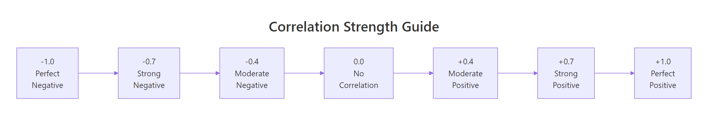
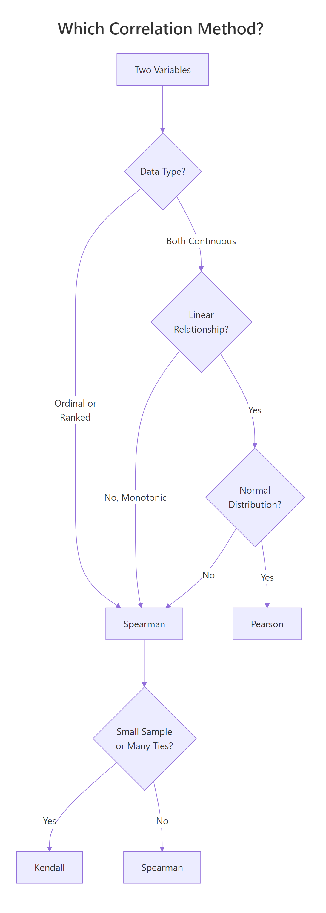
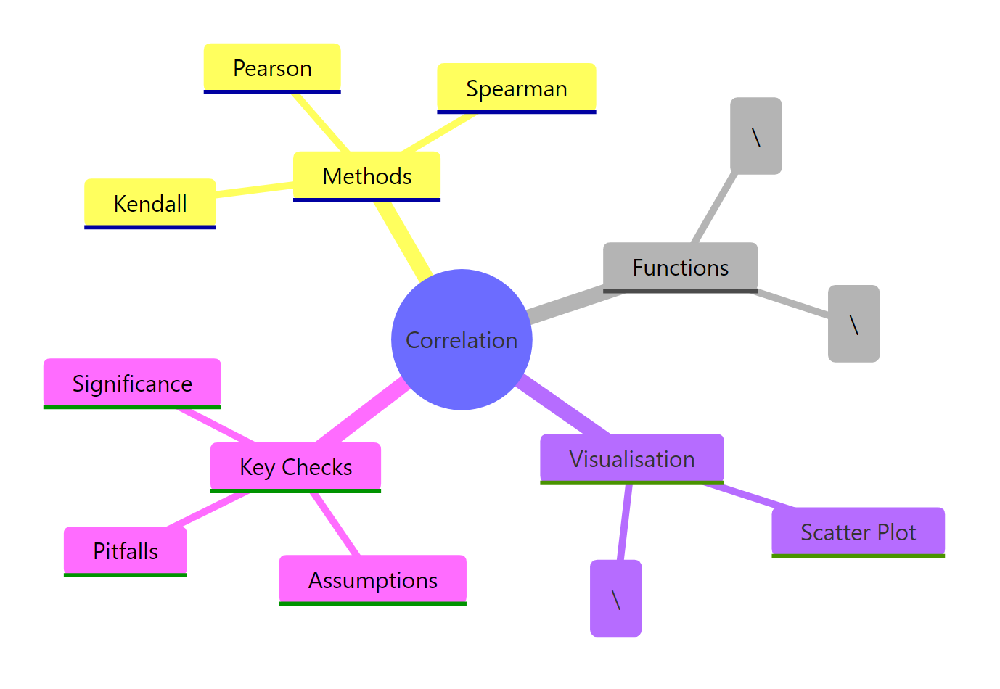

Correlation in R: Pearson vs Spearman vs Kendall, Compute, Test, and Visualise
Correlation measures the strength and direction of the relationship between two variables, a number between −1 and +1. R gives you three methods: Pearson for linear relationships, Spearman for monotonic (ranked) data, and Kendall's tau for small or tied samples.
How do you compute a correlation in R?
How strong is the link between a car's weight and its fuel economy? That's the question correlation answers, it gives you a single number that captures both the direction and strength of a relationship. Let's compute one right now with cor() and see the result.
The result is −0.87, which tells you two things. The negative sign means heavier cars get worse fuel economy (mpg goes down as weight goes up). The magnitude, close to 1, tells you this is a strong relationship. In other words, weight is one of the best predictors of fuel economy in this dataset.
By default, cor() computes Pearson correlation. You can switch to the other two methods by passing the method argument. Let's see all three on the same data.
All three agree on the direction (negative) and general strength (strong). Pearson and Spearman are close because the relationship is roughly linear. Kendall's value is smaller, that's expected and normal. We'll explain why in the Kendall section below.
Here's a quick reference for interpreting the magnitude of any correlation coefficient.

Figure 1: Interpreting correlation strength: from perfect negative to perfect positive.
These thresholds come from Cohen's (1988) conventions for behavioural sciences. In some fields, physics, finance, genomics, the standards differ. Use them as a starting point, not a rigid rule.
Try it: Compute the correlation between mtcars$hp (horsepower) and mtcars$qsec (quarter-mile time). Before running the code, predict: will it be positive or negative?
Click to reveal solution
Explanation: The correlation is −0.71 (strong negative). More horsepower means a lower quarter-mile time, the car accelerates faster.
What is Pearson correlation and when should you use it?
Pearson correlation measures how closely two variables follow a straight-line relationship. Think of it as asking: "If I draw the best-fitting line through these points, how tightly do the points cluster around it?"
The formula captures this intuition. For two variables $x$ and $y$ with $n$ observations:
$$r = \frac{\sum_{i=1}^{n}(x_i - \bar{x})(y_i - \bar{y})}{\sqrt{\sum_{i=1}^{n}(x_i - \bar{x})^2 \cdot \sum_{i=1}^{n}(y_i - \bar{y})^2}}$$
Where:
- $r$ = Pearson correlation coefficient (ranges from −1 to +1)
- $x_i, y_i$ = individual observations
- $\bar{x}, \bar{y}$ = means of each variable
- The numerator measures how much $x$ and $y$ move together
- The denominator standardises the result to the −1 to +1 scale
If you're not interested in the math, skip ahead, the practical code above is all you need.
Pearson works well when three assumptions hold: (1) both variables are continuous, (2) the relationship is linear, and (3) both variables are approximately normally distributed. Let's check these visually and statistically.
The scatter plot shows points clustering around a straight line, good evidence that Pearson is appropriate here. The red line is the linear fit, and the points stick close to it.
Now let's check normality with the Shapiro-Wilk test. A p-value above 0.05 means we can't reject normality.
Both p-values are above 0.05, so we can't reject normality for either variable. Combined with the linear scatter plot, Pearson is a solid choice here.
Try it: Check whether airquality$Ozone and airquality$Temp pass the normality assumption. Use shapiro.test() on each. Remember to handle missing values with na.rm = TRUE when subsetting.
Click to reveal solution
Explanation: Ozone fails normality (p < 0.001) because it's right-skewed. Temperature passes (p = 0.23). Since one variable violates the normality assumption, Spearman would be more appropriate for this pair.
When should you use Spearman's rank correlation?
Spearman's rank correlation works by converting your raw data to ranks, then computing Pearson correlation on those ranks. This simple trick makes it robust to outliers, skewed distributions, and non-linear monotonic relationships.
A monotonic relationship means "as one variable goes up, the other consistently goes up (or consistently goes down)", but the change doesn't have to follow a straight line. An exponential curve is monotonic but not linear. Spearman catches these; Pearson doesn't.
Let's see the difference with a concrete example. We'll create data that follows an exponential curve, clearly monotonic, but not linear.
Spearman (0.993) is much closer to 1 than Pearson (0.889) because the relationship is perfectly monotonic, every increase in x produces an increase in y, even though the curve bends upward. Pearson underestimates the strength because it's looking for a straight line that isn't there.
Spearman also works naturally with ordinal data (ranks, survey ratings, Likert scales) where the raw numbers are just labels for order.
A Spearman correlation of 0.70 on ordinal data tells us that higher product ratings are strongly associated with higher customer satisfaction scores. Pearson would give a similar number here, but Spearman is the theoretically correct choice because the data is ordinal, not truly continuous.
Try it: The iris dataset has numeric measurements. Compute both Pearson and Spearman correlation between Sepal.Length and Petal.Length. Which one is stronger?
Click to reveal solution
Explanation: Both are strong (~0.87-0.88). Spearman is slightly higher, suggesting a mild non-linearity driven by the three species forming clusters along the relationship.
When is Kendall's tau the better choice?
Kendall's tau takes a fundamentally different approach. Instead of working with the actual values or even their ranks, it looks at every possible pair of observations and asks: "Do these two points agree on the direction?"
For a pair of points $(x_1, y_1)$ and $(x_2, y_2)$:
- Concordant: both variables move in the same direction ($x_1 < x_2$ and $y_1 < y_2$, or both greater)
- Discordant: the variables move in opposite directions
$$\tau = \frac{\text{concordant pairs} - \text{discordant pairs}}{\text{total pairs}}$$
Where:
- $\tau$ = Kendall's tau
- Total pairs = $\frac{n(n-1)}{2}$
This pair-counting approach gives Kendall two practical advantages. First, it's more reliable than Spearman with small samples (n < 30), because each pair provides an independent piece of evidence. Second, it handles tied values more gracefully, important with ordinal or discrete data.
Notice that Kendall's tau (0.822) is noticeably lower than Spearman's rho (0.927). This is not a weakness, Kendall and Spearman use different scales. Kendall's values are naturally more conservative because it counts individual pair agreements rather than measuring rank deviation. Think of it like comparing Celsius and Fahrenheit, different scales, same underlying temperature.

Figure 2: Decision flowchart: which correlation method fits your data?
Try it: Create a small dataset of 8 paired observations where some values are tied. Compute both Kendall's tau and Spearman's rho. Do the ties change the relative gap between them?
Click to reveal solution
Explanation: Both show strong positive correlation. Kendall handles the tied values (the repeated 2s and 4s in x, repeated 5s in y) using the tau-b correction, which adjusts the denominator for ties.
How do you test if a correlation is statistically significant?
A correlation coefficient by itself doesn't tell you whether the relationship is real or just sampling noise. Is r = −0.87 genuinely strong, or could random data produce a number that large? That's where cor.test() comes in, it gives you a p-value and confidence interval alongside the correlation.
Let's unpack each piece of this output:
- t = −9.559: the test statistic. Larger absolute values mean stronger evidence against the null hypothesis (no correlation)
- df = 30: degrees of freedom (n − 2 = 32 − 2)
- p-value = 1.29 × 10⁻¹⁰: the probability of seeing a correlation this extreme if there were truly no relationship. This is astronomically small, the relationship is real
- 95% CI: [−0.93, −0.74]: we're 95% confident the true correlation falls in this range. It's entirely negative and entirely strong
- cor = −0.868: the point estimate
You can extract individual components for use in reports or further analysis.
The confidence interval is especially useful, it tells you how precise your estimate is. A wide interval means you need more data; a narrow one means you can trust the number.
Try it: Test whether the correlation between mtcars$drat (rear axle ratio) and mtcars$qsec (quarter-mile time) is significant at the 0.05 level. What's the p-value?
Click to reveal solution
Explanation: The p-value (0.62) is well above 0.05, so this correlation is not statistically significant. The coefficient itself (0.09) is near zero, rear axle ratio and quarter-mile time have essentially no linear relationship.
How do you visualise a correlation matrix?
When you have many variables, computing pairwise correlations one by one gets tedious. A correlation matrix shows every pair at once, and a visual heatmap reveals clusters of related variables at a glance.
Let's start by computing the matrix. We'll pick five variables from mtcars that span different aspects of a car's performance.
The diagonal is always 1.0 (every variable correlates perfectly with itself). The matrix is symmetric, the upper triangle mirrors the lower. Now let's visualise it with corrplot().
In this plot, each circle encodes two pieces of information. The colour shows direction, blue for positive, red for negative. The size shows strength, larger circles mean stronger correlations. The order = "hclust" argument clusters related variables together, making patterns easier to spot.
From the matrix, you can immediately see that mpg is strongly negatively correlated with wt (−0.87) and disp (−0.85), while disp and wt are strongly positively correlated (0.89), heavier cars have bigger engines.
Try it: Build a correlation matrix for the four numeric columns of the iris dataset (iris[, 1:4]) using Spearman. Visualise it with corrplot().
Click to reveal solution
Explanation: Petal.Length and Petal.Width show the strongest positive correlation (~0.94). Sepal.Width is weakly negatively correlated with most other variables, it moves somewhat independently of petal measurements.
What are the common pitfalls of correlation analysis?
Correlation is one of the most misused statistics in practice. Here are four pitfalls that trip up even experienced analysts.
Pitfall 1: Correlation does not imply causation. Ice cream sales and drowning deaths are positively correlated, but ice cream doesn't cause drowning. A hidden third variable (summer heat) drives both. Always ask: "Is there a confounding variable?"
Pitfall 2: Outliers can dominate the result. A single extreme point can dramatically shift the Pearson correlation. Let's see this in action.
One outlier dragged the Pearson correlation from 0.95 (strong positive) to −0.05 (near zero). Spearman barely flinched (0.84) because it works on ranks, the outlier's extreme value doesn't matter, only its relative position.
Pitfall 3: Non-linear relationships hide from Pearson. A perfect quadratic curve has near-zero Pearson correlation, because the positive and negative halves cancel out.
The plot shows a perfect, deterministic relationship, if you know $x$, you know $y$ exactly. Yet Pearson reports zero. This is why the first rule of correlation analysis is: plot your data.
Pitfall 4: Restricted range deflates correlation. If you only look at data within a narrow range, you lose the signal. Imagine measuring height vs weight only among professional basketball players, the range of heights is so narrow that the strong population-level correlation nearly vanishes.
Try it: Generate x <- 1:50 and y <- (x - 25)^2. Compute the Pearson correlation and plot the data. Why is the correlation near zero despite the obvious pattern?
Click to reveal solution
Explanation: The parabola is symmetric around x = 25. The left half (x < 25) shows a negative relationship and the right half (x > 25) shows a positive one, they cancel perfectly, giving r = 0 despite a deterministic relationship.
Practice Exercises
Exercise 1: Pick the right method for airquality
Load the airquality dataset. Remove rows with missing values using na.omit(). Compute both Pearson and Spearman correlation between Ozone and Wind. Test significance with cor.test(). Based on the normality results we explored earlier (Ozone is right-skewed), which method is more appropriate and why?
Click to reveal solution
Explanation: Both show a strong negative relationship, more wind, less ozone. Both are highly significant. However, since Ozone violates the normality assumption (right-skewed), Spearman is the more appropriate choice. The values are similar here, which tells us the relationship is close to linear even though the marginal distribution of Ozone is skewed.
Exercise 2: Full correlation matrix analysis
Build a correlation matrix for mtcars[, c("mpg", "disp", "hp", "wt", "qsec")]. Identify the two strongest positive and two strongest negative correlations. Then visualise the matrix with corrplot() using the "number" method to display correlation values directly.
Click to reveal solution
Explanation: Displacement and weight (0.89) have the strongest positive correlation, larger engines come in heavier cars. Weight and mpg (−0.87) have the strongest negative, heavier cars burn more fuel. The "number" method displays the actual values inside the matrix cells for precise reading.
Exercise 3: Engineer a Pearson-Spearman disagreement
Create a dataset of 30 points where the Pearson correlation is below 0.3 but the Spearman correlation is above 0.8. Plot the data to show why they disagree. Hint: use a monotonic non-linear function like log() or exp() with added noise.
Click to reveal solution
Explanation: The exponential curve is strongly monotonic (Spearman catches this), but the extreme curvature at the right end pulls Pearson's linear fit away from the data. To push Pearson below 0.3, increase the curvature: try exp(my_x / 3) with larger noise. The exact values depend on the random seed, but the pattern is consistent.
Putting It All Together
Let's walk through a complete correlation analysis from start to finish using the swiss dataset, 47 French-speaking Swiss provinces measured on fertility and socio-economic indicators in 1888.
This workflow shows the pattern you should follow for any correlation analysis: look at the data first, check assumptions to pick the right method, compute and test, then visualise the full picture with a correlation matrix.
The key finding? Education and Fertility have a strong negative Spearman correlation (−0.66, p < 0.001). Provinces with higher education levels had lower fertility rates, a relationship that holds up even with the non-normal education distribution, because we used Spearman.
Summary
Here's a side-by-side comparison of the three methods to help you choose quickly.
| Feature | Pearson | Spearman | Kendall |
|---|---|---|---|
| Measures | Linear relationship | Monotonic relationship | Concordance of pairs |
| Data type | Continuous | Continuous or ordinal | Continuous or ordinal |
| Assumes normality | Yes | No | No |
| Sensitive to outliers | Very | Somewhat | Least |
| Best for sample size | Any (n > 30 ideal) | Any | Small (n < 30) |
| Handles ties | N/A | Yes | Better than Spearman |
| Typical value range | Larger | Larger | Smaller (by design) |
| R syntax | cor(x, y) |
cor(x, y, method = "spearman") |
cor(x, y, method = "kendall") |
| Significance test | cor.test(x, y) |
cor.test(x, y, method = "spearman") |
cor.test(x, y, method = "kendall") |
Quick decision rule: Start with Pearson. If your data is non-normal, has outliers, or the relationship is curved but monotonic, switch to Spearman. If your sample is small (< 30) or has many tied values, use Kendall.

Figure 3: Overview of correlation analysis concepts in R.
References
- R Core Team,
cor()andcor.test()documentation. Link - Cohen, J., Statistical Power Analysis for the Behavioral Sciences, 2nd Edition. Lawrence Erlbaum (1988). Effect size conventions (small = 0.1, medium = 0.3, large = 0.5).
- Anscombe, F.J., "Graphs in Statistical Analysis." The American Statistician 27(1): 17–21 (1973). Link
- Hauke, J. & Kossowski, T., "Comparison of Values of Pearson's and Spearman's Correlation Coefficients on the Same Sets of Data." Quaestiones Geographicae 30(2): 87–93 (2011). Link
- Wei, T. & Simko, V., corrplot: Visualization of a Correlation Matrix. CRAN package documentation. Link
- Hollander, M. & Wolfe, D.A., Nonparametric Statistical Methods, 3rd Edition. Wiley (2013). Chapters on rank correlation.
- Wickham, H. & Grolemund, G., R for Data Science, 2nd Edition. O'Reilly (2023). Chapter 11: Exploratory Data Analysis. Link
- Kendall, M.G., "A New Measure of Rank Correlation." Biometrika 30(1/2): 81–93 (1938). Link
Continue Learning
- Bivariate EDA in R, Explore relationships between two variables with visual and statistical methods beyond correlation.
- Descriptive Statistics in R, Summarise central tendency, spread, and shape before diving into relationships.
- Correlation Matrix Plot in R, Advanced corrplot customisation, alternative colour palettes, and publication-ready correlation heatmaps.